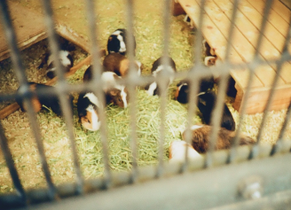
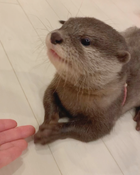
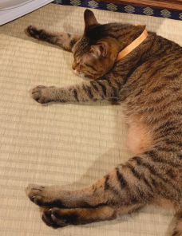
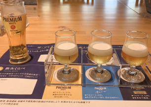
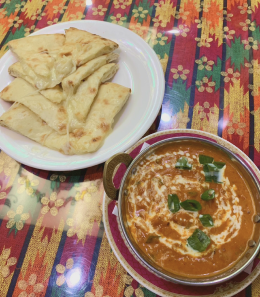
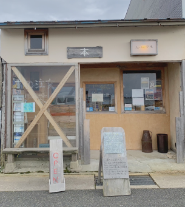
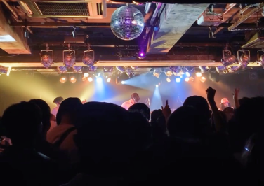
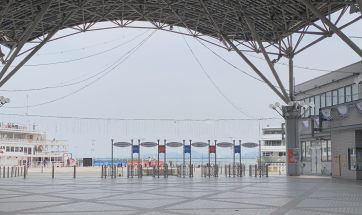
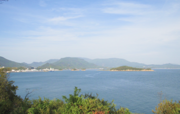

私について
鳥取で18年間暮らしたのち、京都の短大に進学し、そのまま京都で就職。
メーカーの営業事務を1年経験しましたが、
スキルを活かした働き方をしたいと思うようになり、退職。
現在は、職業訓練校で、プログラミングとデザインを学んでいます。
こだに なつき
https://natsuki0505.github.io/portfolio/
©2023 Natsuki Kodani
2001 年 5月 5日 生まれ
出身地 / 鳥取
居住地 / 京都
私について
鳥取で18年間暮らしたのち、京都の短大に進学し、そのまま京都で就職。
メーカーの営業事務を1年経験しましたが、
スキルを活かした働き方をしたいと思うようになり、退職。
現在は、職業訓練校で、プログラミングとデザインを学んでいます。
つくったもの
制作中……
制作中……
制作中……
すきなもの
どうぶつ
  丸っこい動物が好きです。
特にカワウソが好きで、毎日YouTubeで推しカワウソの動画を見ています。
たべもの
 ビールが好きで、金麦をよく飲みます。
最近スパイスカレーにハマっていて、自分でも作るようになりました。
文化
 読書や音楽が好きです。
雰囲気のいい本屋さんに行ったり、
大阪や京都のライブハウスにライブを見に行ったりします。
景色
 海や湖を眺めるのが好きで、よく一人で眺めに出かけます。
一人旅で行った小豆島の海が、穏やかでとてもきれいでした。